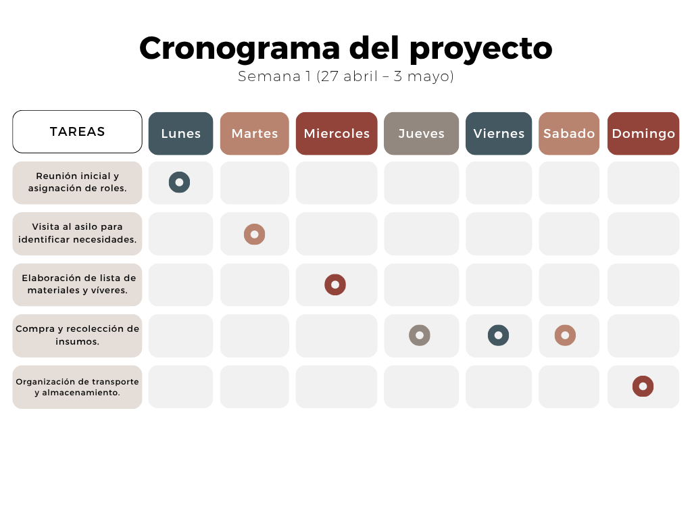

Bueno, para empezar, el proyecto consistía básicamente en identificar las necesidades que tenía el asilo “Hogar de la felicidad”, organizarnos como grupo y buscar la manera de ayudar con los recursos que teníamos disponibles. Aunque es importante aclarar que el proyecto era hipotético, la idea era trabajarlo como si realmente se fuera a ejecutar, tomando en cuenta presupuestos, materiales, planificación, prioridades y todo el proceso necesario para llevarlo a cabo de una manera organizada.
Nuestro proyecto llamado “Alas de Esperanza” trató de ayudar al asilo “Hogar de la felicidad”, porque cuando analizamos la situación del lugar nos dimos cuenta de que tenía bastantes problemas y muchas necesidades que afectaban directamente a los adultos mayores que viven ahí. Habían filtraciones de agua por el mal estado del techo, algunas áreas casi no tenían iluminación, hacían falta productos de higiene, alimentos y varias cosas básicas que realmente son necesarias para que las personas puedan vivir de una manera más digna.
Entonces como grupo decidimos enfocarnos en ayudar en lo que estuviera a nuestro alcance, aunque sinceramente el presupuesto estaba bastante limitado y no podíamos hacer todo lo que queríamos. Aun así, organizamos el trabajo por etapas para no hacer todo a lo loco. Primero hicimos una visita y observación del asilo para entender bien qué era lo más urgente. Después hicimos la planificación y una lista de materiales y productos necesarios, como láminas, impermeabilizante, pintura, focos, alimentos, pañales y artículos de higiene.

Ya cuando teníamos todo organizado empezamos a plantear cómo se ejecutaría el proyecto. Entre las acciones más importantes estaba aplicar impermeabilizante para reducir la humedad y las filtraciones de agua, cambiar láminas dañadas del techo y reemplazar focos que ya no funcionaban. Además, también se planificó la entrega de alimentos y productos básicos para apoyar al asilo y a los residentes.
Algo que nos dejó pensando bastante fue que muchas veces uno vive tan concentrado en sus propios problemas que ni se pone a pensar en las condiciones en las que viven otras personas. Y sinceramente, aunque el proyecto fuera hipotético, imaginar toda la situación y convivir con la idea de esas necesidades hizo que todo se sintiera más humano y no solo como una tarea de la universidad.
Porque al final… ¿cuántas veces uno da por sentado tener comida, un lugar seco donde dormir o simplemente compañía? ¿Y cuántas personas pasan necesidades en silencio sin que nadie las mire?
También aprendimos que ayudar no siempre significa hacer algo enorme o gastar miles de quetzales. A veces pequeñas acciones pueden hacer sentir mejor a alguien o mejorar un poco su situación. ¿Realmente se necesita mucho para ayudar a otra persona? Probablemente no.